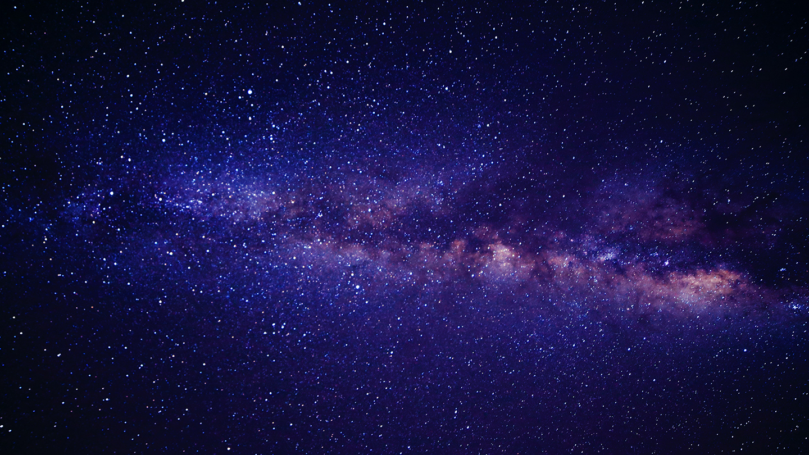

My name is Gaurav Kumar, I'm an international student at Langara College. I enrolled in WMDD and i love coding.
I like winning battles and pushing my limits when challenging opponents in online games, which is why I truly enjoy playing video games.
My favrouite Esport player in "Shroud"
When I was a child , I was fascinated by anything related to space. I spent sleepless night wondering what is outside of the edge of universe I also liked Greek and Roman mythology that linked to constellation.

Image by Astronomy | Whitman College
* 2020, Gaurav Kumar, all rights reserved.